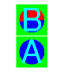
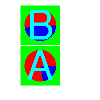
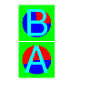
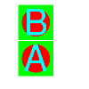
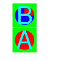
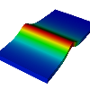
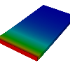
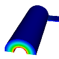
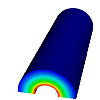

{kind=link}

{kind=link}

{kind=link}
{kind=link}
{kind=link}


| Test Case | Errors | Images | |||
| %Diffs | Maximum | Baseline | Current | Diff Map | |
| Set time using different time sliders | |||||
| timesliders00 | 90000.00 | 0.00 | |
||
| timesliders01 | 0 modifications totalling 0 lines | ||||
| timesliders02 | 90000.00 | 0.00 | |
||
| timesliders03 | 0 modifications totalling 0 lines | ||||
| timesliders04 | 90000.00 | 0.00 |  | ||
| timesliders05 | 0 modifications totalling 0 lines | ||||
| timesliders06 | 0 modifications totalling 0 lines | ||||
| timesliders07 | 90000.00 | 0.00 | |
||
| timesliders08 | 0 modifications totalling 0 lines | ||||
| Time slider behavior with a correlation | |||||
| timesliders09 | 90000.00 | 0.00 |  | ||
| timesliders10 | 0 modifications totalling 0 lines | ||||
| timesliders11 | 90000.00 | 0.00 | |
||
| timesliders12 | 0 modifications totalling 0 lines | ||||
| timesliders13 | 90000.00 | 0.00 |  | ||
| timesliders14 | 0 modifications totalling 0 lines | ||||
| timesliders15 | 90000.00 | 0.00 |  | ||
| timesliders16 | 0 modifications totalling 0 lines | ||||
| timesliders17 | 90000.00 | 0.00 |  | ||
| timesliders18 | 0 modifications totalling 0 lines | ||||
| Make sure cloned window gets time sliders | |||||
| timesliders19 | 90000.00 | 0.00 | |
||
| timesliders20 | 0 modifications totalling 0 lines | ||||
| timesliders21 | 90000.00 | 0.00 | |
||
| timesliders22 | 0 modifications totalling 0 lines | ||||
| Make sure opening ST database clears time slider list | |||||
| timesliders23 | 0 modifications totalling 0 lines | ||||
| timesliders24 | 90000.00 | 0.00 | |
||
| timesliders25 | 0 modifications totalling 0 lines | ||||
| Make sure replace sequences give right time sliders | |||||
| timesliders26 | 90000.00 | 0.00 | |
||
| timesliders27 | 0 modifications totalling 0 lines | ||||
| timesliders28 | 90000.00 | 0.00 | |||
| timesliders29 | 0 modifications totalling 0 lines | ||||
| timesliders30 | 90000.00 | 0.00 | |||
| timesliders31 | 0 modifications totalling 0 lines | ||||
| timesliders32 | 90000.00 | 0.00 |  | ||
| timesliders33 | 0 modifications totalling 0 lines | ||||
| timesliders34 | 90000.00 | 0.00 |  | ||
| timesliders35 | 0 modifications totalling 0 lines | ||||
| Make sure we get the right time sliders after deleting plots. | |||||
| timesliders36 | 90000.00 | 0.00 |  | ||
| timesliders37 | 0 modifications totalling 0 lines | ||||
| timesliders38 | 90000.00 | 0.00 |  | ||
| timesliders39 | 0 modifications totalling 0 lines | ||||
| timesliders40 | 0 modifications totalling 0 lines | ||||
Final Return Code: 111
{kind=link}
{kind=link}
{kind=link}
{kind=link}
{kind=link}
{kind=link}